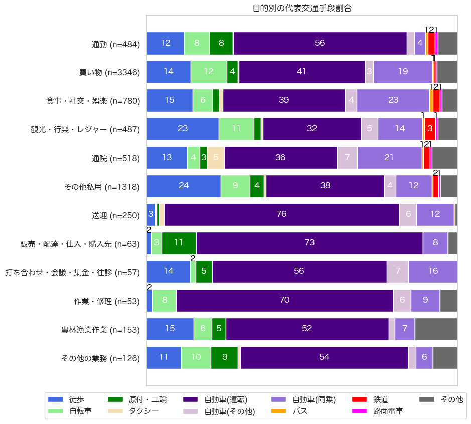
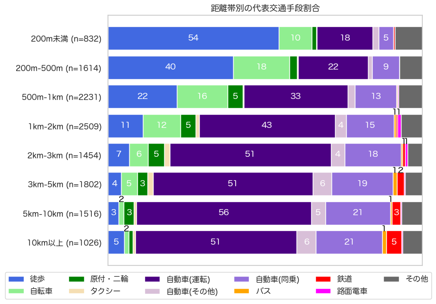

解説 10
図1は、高齢者の目的別の交通手段分担率です。 買い物、娯楽、私用目的では、自ら運転する自動車の分担率が3〜4割で、別の人の運転への同乗が1〜2割程度を占めます。 高齢といえど、公共交通の利用は少なく、自動車中心の移動です。

図1：高齢者の目的別の交通手段分担率
距離帯別に見ると (図2)、500m以上の移動で、徒歩・自転車の分担率と自動車の分担率が逆転し、2km以上では自動車による移動が7割以上を占めます。

図2：高齢者の距離別の交通手段分担率